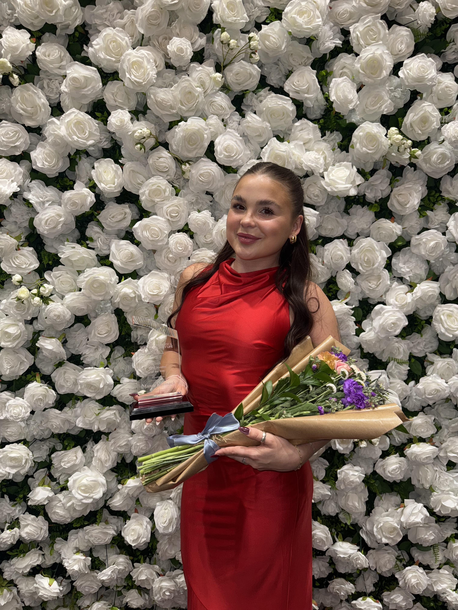
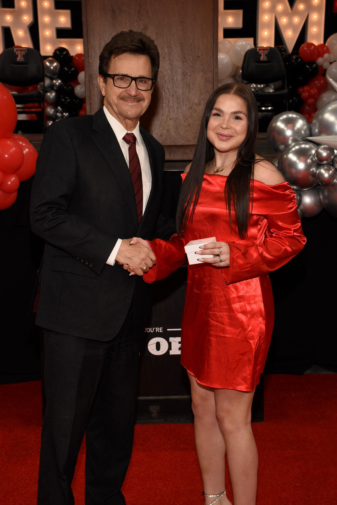

Awards & Honors

Panhellenic Woman of the Year
2024
Selected as Texas Tech Panhellenic Woman of the Year after being nominated by members of the Panhellenic community. This award recognizes a woman who demonstrates exceptional leadership, service, and dedication to Panhellenic values. I was chosen as the recipient from a community of more than 3,500 Panhellenic women.

AFLV Central Conference Speaker
2024 – 2025
Invited to present at the Association of Fraternal Leadership & Values (AFLV) Central Conference, a regional leadership conference attended by fraternity and sorority leaders from universities across the country. I presented to approximately 100 attendees about leadership development and recruitment strategies within the Panhellenic community.

Academic Honors
- Dean’s List — Fall 2022 through Spring 2025
- President’s List — Fall 2025
- Graduating with Honors - Summa Cum Lade
These recognitions reflect consistent academic achievement and commitment to maintaining high academic performance throughout my time at Texas Tech University.
Leadership Programs & Conferences
- AFLV Central Conference — 2024 & 2025
- Undergraduate Interfraternity Institute (UIFI) — 2024
- Leadership Summit — 2024 & 2025
- Rho Gamma Training & Workshop Facilitator — 2024 & 2025